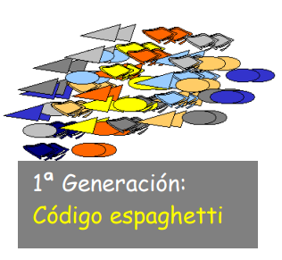
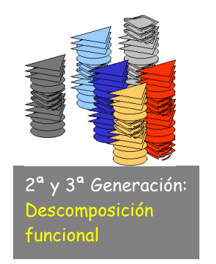
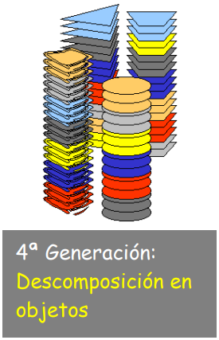
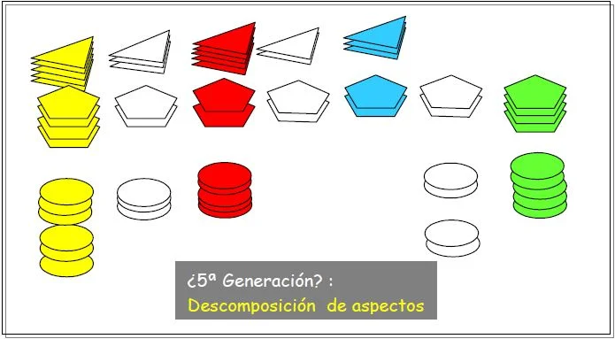
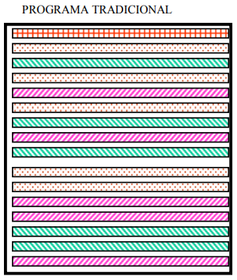
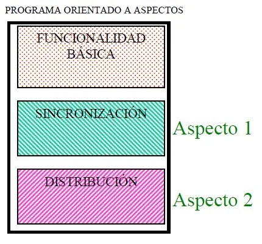

PROGRAMACIÓN ORIENTADA A ASPECTOS.
Introducción.
A lo largo de la historia, la ingeniería de software ha atravesado ciertas "etapas" en las que se ha ido desarrollando un concepto básico de la programación (e incluso la vida diaria): dividir una gran tarea en pequeñas tareas manejables es mucho más sencillo que intentar realizar el todo, "divide y vencerás".
En un inicio se tenía el código sin división alguna: datos y funcionalidades estaban mezcladas por todo el código. A esta etapa se le llama la generación del código "espaghetti":

En la imagen, las formas tienen la función de representar los datos, y los colores representan la funcionalidad. De ésta manera la imagen ilustra lo que llamamos el código "espaghetti".
Luego de ésta generación de caos en el código, se dio el primer gran paso en el uso del concepto "divide y vencerás". Los desarrolladores comenzaron a identificar las partes más manejables del código y las expresaron como funciones definidas dentro del dominio del problema:

Se consiguió encapsular de cierta manera las funcionalidades, y se permitió incluir nuevas funciones de forma más sencilla. No obstante, todavía existían inconvenientes, ya que la claridad de las funciones era pobre debido a la utilización de datos compartidos; por otro lado, el agregar un nuevo tipo de dato se convertía en una tarea que requería modificar cuanta función estuviera involucrada con él.
Finalmente, en un intento por solucionar los problemas que dejaban los datos esparcidos por todo el código, nace la Programación Orientada a Objetos. Esto supuso un gran avance que es visible hasta el día de hoy, siendo éste uno de los paradigmas de programación más importantes y usados de los últimos años. Su descomposición en objetos es mucho más acertada en el entorno real que la descomposición funcional.

Aunque la programación orientada a objetos es un paradigma de programación que resuelve bastantes problemas de la programación tradicional, como el integrar nuevos datos, no es perfecta y posee innumerables problemas, dado que las funciones continúan esparcidas por todo el código y para agregar una función nueva es necesario revisar y modificar objetos.
Además, la ingeniería de software no se limitan a tratar las funcionalidades básicas del problema. Existen muchos otros conceptos que en la descomposición funcional y en la programación orientada a objetos son aproximados de manera poco eficiente, por ejemplo:
- La Sincronización.
- La Distribución.
- El Manejo de Errores.
- La Optimización de Memoria.
- La Gestión de la Seguridad.
Mientras que las descomposiciones funcional y orientada a objetos no nos plantean ningún problema con respecto al diseño y la implementación de la funcionalidad básica, estas técnicas no se comportan bien con los otros aspectos. Es decir, que nos encontramos con problemas de programación en los cuales ni las técnicas funcionales, ni las orientadas a objetos son suficientes para capturar todas las decisiones de diseño que el programa debe implementar.
La programación orientada a aspectos (POA) es una nueva metodología de programación que aspira a soportar la separación de competencias para los aspectos antes mencionados. Es decir, que intenta separar los componentes y los aspectos unos de otros, proporcionando mecanismos que hagan posible abstraerlos y componerlos para formar todo el sistema. En definitiva, lo que se persigue es implementar una aplicación de forma eficiente, fácil de entender y mantener.

En este esquema se observa que la disociación de los distintos conjuntos se realiza tanto en base a la forma (datos) como a las tonalidades (funciones). Además, se indica que las distintas funcionalidades están relacionadas de alguna manera. Esto se representa utilizando figuras transparentes para indicar este tipo de relación.
Todos estos conceptos se encuentran diseminados por todo el código, a veces incluso implementados múltiples veces, por cada objeto o clase que necesite de las mismas. Un código normal, implementado con paradigmas actuales puede lucir de la siguiente manera:

En una version orientada a aspectos del mismo codigo, tenemos un programa mas compacto y modularizado.

La no separación de los conceptos transversales en la programación ocasiona distintos tipos de problemas como pueden ser:
- Baja correspondencia: La implementación simultánea de varios conceptos oscurece la correspondencia entre un concepto y su implementación.
- Baja productividad: Al intentar implementar varios conceptos en un mismo módulo existe la posibilidad de que el desarrollador pierda el rumbo del concepto principal por concentrarse en conceptos periféricos.
- Baja reusabilidad: El tener en un mismo módulo implementados varios conceptos, resulta en un código poco reusable.
- Baja calidad de código: El código con múltiples conceptos entrelazados en un mismo módulo produce un código propenso a errores. Por otro lado, al tener como objetivo demasiados conceptos es posible que se haga una mejor o peor implementación de los mismos por considerarlos más o menos importantes.
- Evolución más dificultosa: Con una implementación que no esté completamente modularizada los futuros cambios en un requerimiento implican revisar y modificar cada uno de los módulos donde esté presente ese requerimiento.
REFERENCIAS.
- Quintero, A. M. R. (2000). Visión General de la Programación Orientada a Aspectos. Departamento de Lenguajes y Sistemas Informáticos. Universidad de Sevilla.
- Gupta, L. (2015). Spring AOP – AspectJ Annotation Config Example – HowToDoInJava. [online] Howtodoinjava.com. Available at: http://howtodoinjava.com/spring/spring-aop/spring-aop-aspectj-example-tutorial-using-annotation-config/ [Accessed 15 May 2016].
- Stackoverflow.com. (2016). Spring AOP: What's the difference between JoinPoint and PointCut?. [online] Available at: http://stackoverflow.com/questions/15447397/spring-aop-whats-the-difference-between-joinpoint-and-pointcut [Accessed 15 May 2016].
- Spinczyk, O., & Lohmann, D. (2007). The design and implementation of AspectC++. Knowledge-Based Systems, 20(7), 636-651.
- Asteasuain, F., & Contreras, B. E. (2002). Programación Orientada a Aspectos Análisis del paradigma. Departamento de Ciencias e Ingeniería de la Computación.
- Eil.utoronto.ca Rune Teigen (1997). COOrdination Language. http://eil.utoronto.ca/wp-content/static/profiles/rune/node7.html